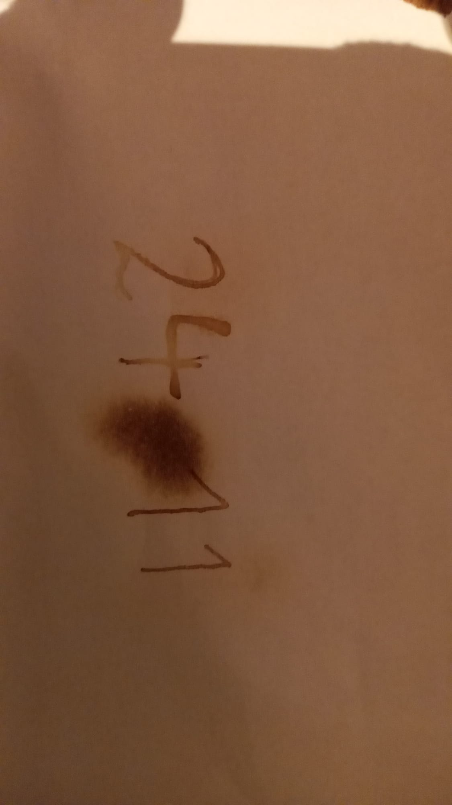

9. Dezember
Die Feuerprobe
Johann hatte eine plötzliche Eingebung.
„Hans, hast du Feuer?“ fragte er zögerlich.
Hans schaute ihn verwundert an. "Rauchst Du etwa?" fragte er und holte schon zu einer langen erzieherischen Massnahme aus, als Johann vehement den Kopf schüttelte. "Nein, es ist wegen der Pin, sie soll auf den Briefen sein.." Hans schaute nur verwirrt. "Hey" rief er dem Typ in der gelben Regenjacke zu. "Feuer?". Eine Streichholzschachtel flog zurück."Aeh" stammelte Johann.. "und vielleicht eine Kerze?". Jetzt schaute Hans sehr verwundert. Seine Neugier war wirklich geweckt. "Bestimmt nicht.." murmelte er, aber tastete trotzdem automatisch in den grossen Taschen seines Nikolausumhangs herum und zog zu seiner eigenen Verwunderung eine Weihnachtskerze heraus.
Johann hielt die beiden Briefe vorsichtig über die kleine Flamme, ohne sie zu verbrennen. Ein seltsames Gefühl von Vertrautheit überkam ihn – als hätte er diese Situation schon einmal erlebt.
Langsam, wie aus dem Nichts, erschien die PIN auf dem Papier. Seine Herz stoppte fast. Als ob er genau diese Pin schon einmal gesehen hätte, es war wie verhext. 
Doch das Gefühl war nur flüchtig. Mit Zitronensaft geschrieben, dachte Johann, während ein Lächeln sein Gesicht erhellte. Er konnte es kaum glauben. „Das war ja fast zu einfach!“, lachte er erleichtert. 2411. – der 24. November. Ein Datum, das er sich leicht merken konnte, genau einen Monat vor Weihnachten.
Was soll Johann tun?
- die Pin ins Telefon eingeben